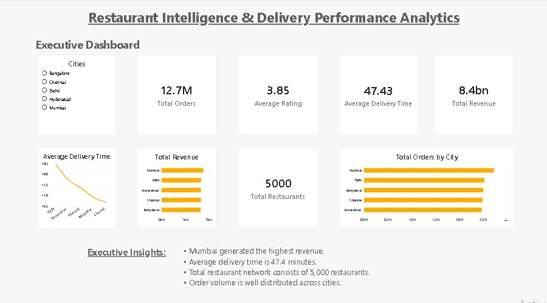

Aspiring Data Analyst with 2 years of professional business experience. Passionate about transforming raw data into meaningful business insights through analytics, dashboards, and data visualization.
View My ProjectsBusiness Experience Meets Data Analytics
I am an aspiring Data Analyst with two years of professional experience in sales and business operations. During my career, I worked extensively with sales data, customer insights, territory performance, and business reporting, which sparked my interest in using data to solve business problems.
To transition into Data Analytics, I developed hands-on skills in SQL, Power BI, Excel, Python, and data visualization by building end-to-end analytics projects using real-world datasets.
My goal is to combine business understanding with technical expertise to help organizations make data-driven decisions that improve performance and create measurable business value.
| Experience | 2 Years |
| Current Focus | Data Analytics |
| Tools | SQL, Power BI, Excel, Python |
| Projects | Business Intelligence |
| Location | India |
Technologies I use for Data Analytics
Advanced Querying • Joins • CTEs
Dashboards • DAX • Power Query
Pivot Tables • Lookup • Charts
Pandas • NumPy • Data Cleaning
Measures • KPIs • Time Intelligence
Database Design • SSMS • ETL
End-to-End Business Intelligence Portfolio

Developed an end-to-end Business Intelligence solution using SQL Server and Power BI to analyze restaurant performance, customer behavior, delivery efficiency, and revenue trends across multiple cities.